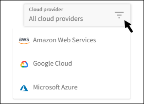
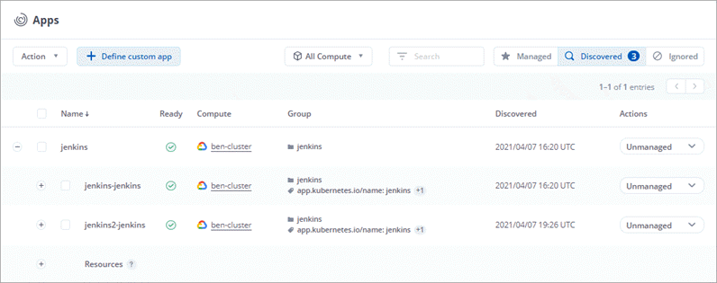
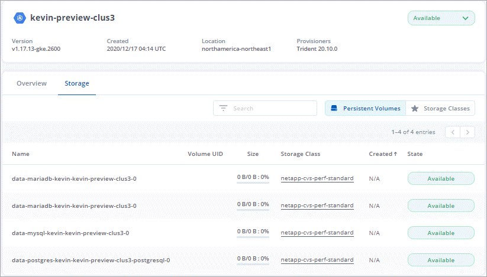

Amazon Web Services
Amazon Web Services
 Google Cloud
Google Cloud
 Microsoft Azure
Microsoft Azure
 Demander de modifier un document
Demander de modifier un document Modifier sur GitHub
Modifier sur GitHub Guide des contributeurs
Guide des contributeursNouveautés du service de contrôle Astra
Contributeurs

NetApp met régulièrement à jour le service Astra Control afin de vous apporter de nouvelles fonctionnalités, des améliorations et des correctifs.
7 septembre 2022
Cette version comprend des améliorations de stabilité et de résilience pour l’infrastructure Astra Control Service.
10 août 2022
Cette version comprend de nouvelles fonctionnalités et améliorations suivantes.
-
Amélioration du flux de travail de gestion des applications l’amélioration des flux de travail de gestion des applications offre une plus grande flexibilité lors de la définition d’applications gérées par Astra Control.
-
Prise en charge des clusters Amazon Web Services Astra Control Service peut désormais gérer les applications exécutées sur des clusters hébergés dans Amazon Elastic Kubernetes Service. Vous pouvez configurer les clusters pour qu’ils utilisent Amazon Elastic Block Store ou Amazon FSX pour NetApp ONTAP en tant que système de stockage back-end.
-
Crochets d’exécution améliorés en plus des crochets d’exécution pré et post-instantané, vous pouvez désormais configurer les types de crochets d’exécution suivants :
-
Avant sauvegarde
-
Post-sauvegarde
-
Post-restauration
Parmi les autres améliorations, Astra Control prend désormais en charge l’utilisation du même script pour plusieurs crochets d’exécution.

Les crochets d’exécution avant ou après snapshot fournis par NetApp pour des applications spécifiques ont été supprimés dans cette version. Si vous ne fournissez pas vos propres crochets d’exécution pour les instantanés, Astra Control Service prendra des instantanés cohérents avec les collisions à partir du 4 août 2022. Consultez le "Référentiel GitHub NetApp Verda" pour des exemples de scripts de hook d’exécution que vous pouvez modifier en fonction de votre environnement.
-
-
Prise en charge d’Azure Marketplace vous pouvez maintenant vous inscrire à Astra Control Service via Azure Marketplace.
-
Sélection d’un fournisseur de cloud tout en lisant la documentation relative au service Astra Control, vous pouvez maintenant sélectionner votre fournisseur de cloud en haut à droite de la page. La documentation ne s’applique qu’au fournisseur cloud que vous avez sélectionné.

26 avril 2022
Cette version comprend de nouvelles fonctionnalités et améliorations suivantes.
-
Espace de noms contrôle d’accès basé sur des rôles (RBAC) Astra Control Service prend désormais en charge l’attribution de contraintes d’espace de noms aux utilisateurs membres ou Viewer.
-
Prise en charge d’Azure Active Directory Service Astra Control prend en charge les clusters AKS qui utilisent Azure Active Directory pour l’authentification et la gestion des identités.
-
Prise en charge des clusters AKS privés vous pouvez désormais gérer des clusters AKS qui utilisent des adresses IP privées.
-
Retrait du godet de l’Astra Control vous pouvez maintenant retirer un godet du service Astra Control.
14 décembre 2021
Cette version comprend de nouvelles fonctionnalités et améliorations suivantes.
-
Nouvelles options de système de stockage back-end
-
Restauration d’applications sur place vous pouvez désormais restaurer un snapshot, un clone ou une sauvegarde d’une application sur place, en les restaurant sur le même cluster et dans le même espace de noms.
-
Événements de script avec crochets d’exécution Astra Control prend en charge les scripts personnalisés que vous pouvez exécuter avant ou après avoir pris un instantané d’une application. Cela vous permet d’effectuer des tâches telles que la suspension des transactions de base de données pour que l’instantané de votre application de base de données soit cohérent.
-
Applications déployées par l’opérateur Astra Control prend en charge certaines applications lorsqu’elles sont déployées avec des opérateurs.
-
Les entités de service ayant un périmètre de groupe de ressources le service de contrôle Astra prend désormais en charge les entités de service qui utilisent une portée de groupe de ressources.
5 août 2021
Cette version comprend de nouvelles fonctionnalités et améliorations suivantes.
-
Astra Control Center Astra Control est désormais disponible dans un nouveau modèle de déploiement. Astra Control Center est un logiciel autogéré que vous installez et utilisez dans votre data Center. Il vous permet de gérer la gestion du cycle de vie des applications Kubernetes pour les clusters Kubernetes sur site.
Pour en savoir plus, "Accédez à la documentation Astra Control Center".
-
Apportez votre propre compartiment pour gérer les compartiments utilisés par Astra pour les sauvegardes et les clones, en ajoutant des compartiments supplémentaires et en modifiant le compartiment par défaut pour les clusters Kubernetes de votre fournisseur cloud.
2 juin 2021
Cette version inclut des correctifs et les améliorations suivantes apportées à la prise en charge de Google Cloud.
-
Prise en charge des VPC partagés vous pouvez désormais gérer des clusters GKE dans des projets GCP avec une configuration réseau VPC partagée.
-
La taille du volume persistant pour le type de service CVS Astra Control Service crée maintenant des volumes persistants d’une taille minimale de 300 Gio en utilisant le type de service CVS.
-
La prise en charge du système d’exploitation optimisé pour conteneurs est désormais prise en charge avec les nœuds workers GKE. Il s’agit en plus de la prise en charge d’Ubuntu.
15 avril 2021
Cette version comprend de nouvelles fonctionnalités et améliorations suivantes.
-
Prise en charge des clusters AKS Astra Control Service peut désormais gérer des applications exécutées sur un cluster Kubernetes géré dans Azure Kubernetes Service (AKS).
-
API REST l’API REST d’Astra Control est désormais disponible. Les API reposent sur les technologies modernes et les bonnes pratiques actuelles.
-
Abonnement annuel au service Astra Control propose désormais un abonnement Premium.
Prépayez à un tarif réduit avec un abonnement annuel qui vous permet de gérer jusqu’à 10 applications par application Pack. Par exemple, pour acheter autant de packs que nécessaire à votre entreprise, contactez le service NetApp Sales : achetez 3 packs pour gérer 30 applications auprès d’Astra Control Service.
Si vous gérez plus d’applications que votre abonnement annuel, vous serez facturé au taux de surcharge de 0.005 $ par minute, par application (comme Premium PayGo).
-
Espace de noms et visualisation des applications nous avons amélioré la page applications découvertes afin de mieux afficher la hiérarchie entre les espaces de noms et les applications. Développez simplement un espace de noms pour voir les applications contenues dans cet espace de noms.

-
Améliorations de l’interface utilisateur les assistants de protection des données ont été améliorés pour faciliter l’utilisation. Par exemple, nous avons perfectionné l’assistant de stratégie de protection pour afficher plus facilement le planning de protection au fur et à mesure que vous le définissez.

-
Améliorations apportées aux activités nous avons facilité l’affichage des détails sur les activités de votre compte Astra Control.
-
Filtrez la liste d’activités par application gérée, niveau de gravité, utilisateur et plage horaire.
-
Téléchargez l’activité de votre compte Astra Control dans un fichier CSV.
-
Affichez les activités directement à partir de la page clusters ou de la page applications après avoir sélectionné un cluster ou une application.
-
1er mars 2021
Astra Control Service prend désormais en charge le "CVS type de service" Avec Cloud Volumes Service pour Google Cloud. En plus de prendre déjà en charge le type de service CVS-Performance. À titre de rappel, Astra Control Service utilise Cloud Volumes Service pour Google Cloud comme back-end de stockage pour vos volumes persistants.
Avec cette amélioration, Astra Control Service peut désormais gérer les données d’application pour les clusters Kubernetes qui s’exécutent dans any "Région Google Cloud prise en charge du protocole Cloud Volumes Service".
Si vous avez la possibilité de choisir entre régions Google Cloud, vous pouvez choisir CVS ou CVS-Performance, selon vos besoins en termes de performances. "En savoir plus sur le choix d’un type de service".
25 janvier 2021
Nous avons le plaisir d’annoncer que le service Astra Control est maintenant disponible de façon générale. Nous avons inclus de nombreux commentaires reçus de la version bêta et quelques autres améliorations notables.
-
La facturation est désormais disponible, ce qui vous permet de passer du Plan gratuit au Plan Premium. "En savoir plus sur la facturation".
-
Le service Astra Control crée désormais des volumes persistants avec une taille minimale de 100 Gio lors de l’utilisation du type de service CVS-Performance.
-
Astra Control Service peut désormais découvrir des applications plus rapidement.
-
Vous pouvez désormais créer et supprimer des comptes par vous-même.
-
Nous avons amélioré les notifications lorsque Astra Control Service ne peut plus accéder à un cluster Kubernetes.
Ces notifications sont importantes car Astra Control Service ne peut pas gérer les applications des clusters déconnectés.
17 décembre 2020 (mise à jour bêta)
Nous nous sommes principalement concentrés sur les correctifs visant à améliorer votre expérience, mais nous avons apporté quelques autres améliorations notables :
-
Lorsque vous ajoutez votre première puissance de calcul Kubernetes à Astra Control Service, le magasin d’objets est créé à l’emplacement où réside le cluster.
-
Des informations détaillées sur les volumes persistants sont désormais disponibles lorsque vous affichez les détails du stockage au niveau du calcul.

-
Nous avons ajouté une option permettant de restaurer une application à partir d’un snapshot ou d’une sauvegarde existant.

-
Si vous supprimez un cluster Kubernetes géré par Astra Control Service, le cluster s’affiche à présent dans un état supprimé. Vous pouvez ensuite retirer le bloc d’instruments du service Astra Control.
-
Les propriétaires de comptes peuvent désormais modifier les rôles affectés à d’autres utilisateurs.
-
Nous avons ajouté une section de facturation qui sera activée lorsque le service Astra Control sera disponible pour General Availability (GA).